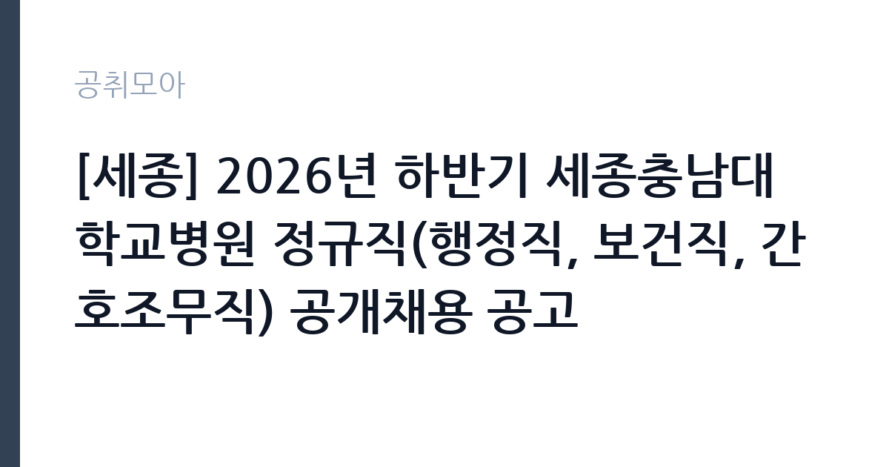

[공공기관] [세종] 2026년 하반기 세종충남대학교병원 정규직(행정직, 보건직, 간호조무직) 공개채용 공고
충남대학교병원 · 세종 · 마감 2026-10-21 (D-14) · 출처 잡알리오

한눈에 보는 모집 조건
| 기관 | 충남대학교병원 |
|---|---|
| 공고명 | [세종] 2026년 하반기 세종충남대학교병원 정규직(행정직, 보건직, 간호조무직) 공개채용 공고 |
| 고용형태 | 정규직 |
| 근무지 | 세종 |
| 게시일 | 2026-10-07 |
| 마감일 | 2026-10-21 (D-14) |
지원자격, 이렇게 읽으세요
- 공공기관 채용공시
- 세부 조건은 원문 공고문 확인
직종과 분야별 응시자격은 원문 공고문의 첨부파일에서 확인해야 합니다. 행정직은 전공 제한이 넓은 경우가 많지만, 보건직은 해당 면허가 필수이며 간호조무직은 간호조무사 면허가 기본 요건입니다. 신생 병원이라 분야별로 신입 지원 가능 여부가 따로 안내되므로 첨부파일을 꼼꼼히 읽어야 합니다. 연령과 병역, 결격사유 등 공통 요건은 공고일 기준이며, 세종 근무가 가능한지도 함께 고려하시기 바랍니다. 제출서류 미비로 탈락하는 사례가 매년 나오므로 서류 목록을 출력해 하나씩 체크하시기 바랍니다.
이 공고의 포인트
이 공고의 매력은 신생 대학병원의 정규직이라는 점입니다. 개원한 지 얼마 되지 않아 시설과 장비가 새롭고, 조직이 커지는 과정이라 승진과 보직 기회가 상대적으로 넓다는 평가가 있습니다. 세종시는 정주 여건이 꾸준히 개선되고 있으며, 대전 본원과 인사 교류도 이루어집니다. 행정과 보건, 간호조무 세 직군을 함께 뽑아 선택의 폭이 넓습니다. 다만 분야별 자격 요건이 다르므로 관심 분야 첨부파일을 먼저 확보하는 것이 순서입니다.
전형은 어떻게 진행되나
전형은 원문 공고문에 안내된 절차를 따릅니다. 대학병원 채용은 서류전형과 필기전형, 면접전형 순으로 진행되는 것이 일반적이며, 직군에 따라 인성검사가 추가될 수 있습니다. 서류전형에서는 응시자격 충족 여부와 자기소개서 완성도를 평가하므로, 면허번호와 자격 취득일을 정확히 기재해야 합니다. 필기전형이 있는 경우 NCS 직업기초능력과 직무 전공 평가가 출제되는 경우가 많습니다. 면접은 블라인드 방식이 원칙인 경우가 많으니 출신학교 언급 없이 직무 경험 중심으로 답변을 준비하시기 바랍니다. 세부 배점과 일정은 원문 공고문에서 확인하시기 바랍니다.
원문에서 확인한 전형 방식
직종 및 분야별 응시자격 첨부파일 참고
이런 분께 추천해요
- 세종시 정착을 고려하는 분께 추천합니다. 신생 병원이라 커리어와 생활을 함께 설계하기 좋습니다.
- 간호조무사 면허 보유자에게 추천합니다. 대학병원 경력은 다른 병원으로 이직할 때에도 강점이 됩니다.
- 병원 행정과 총무, 원무 업무에 관심 있는 분께 추천합니다. 진료 지원 행정의 전문성을 쌓을 수 있습니다.
지원 전 체크리스트
- 직종별 응시자격 첨부파일에서 본인 분야의 면허와 경력 요건을 확인했습니다.
- 면허증과 자격증 사본, 졸업증명서와 경력증명서의 발급일자를 확인했습니다.
- 자기소개서 블라인드 기재 금지 항목과 항목별 글자 수를 확인했습니다.
- 마감일인 10월 21일 이전에 온라인 접수를 마치고 접수 확인증을 저장했습니다.
모집 일정과 제출 타이밍
마감일은 2026년 10월 21일입니다. 병원 채용 접수는 마감 당일에 접속이 몰리므로 여유 있게 며칠 전에 제출하는 것이 좋습니다. 서류합격자 발표와 필기, 면접 일정은 원문 공고문의 전형 일정을 따릅니다. 면허증 재발급과 경력증명서 발급에 시간이 걸리므로 이번 주 안에 신청하시기 바랍니다. 면접 예상 시기에 맞춰 세종 방문 일정과 복장을 미리 준비해 두면 마음이 편해집니다.
직무 이해하기: 공공기관
세종충남대학교병원 행정직은 진료 지원과 총무, 인사, 예산 실무를 맡으며, 보건직은 검사와 영상, 재활 등 진료 현장을 지원합니다. 간호조무직은 병동과 외래에서 간호사 업무를 보조하며 투약 보조와 환자 간호, 진료 준비를 수행합니다. 신생 병원이라 매뉴얼이 계속 정비되는 과정이므로, 새로운 업무를 배우고 정리하는 데 적극적인 분이 적응을 잘합니다. 진료권이 넓어 외래 환자 응대가 많으며, 부서에 따라 주말과 야간 당직이 있을 수 있어 근무형태를 미리 확인하시기 바랍니다.
자기소개서 작성 팁
자기소개서에서는 신생 병원에 기여할 수 있는 본인의 강점을 구체적으로 쓰는 것이 좋습니다. 행정직은 문서 처리와 예산 실무 경험을, 보건직은 면허 취득 과정과 실습 사례를 직무와 연결하시기 바랍니다. 간호조무직은 환자 안전과 감염관리 경험을 사례로 풀면 설득력이 커집니다. 세종 지역 정착 의지와 지역 거점병원 역할에 대한 공감을 한 문단으로 정리하면 동기가 명확해집니다. 숫자로 증명할 수 있는 경험은 수치와 함께 제시하시기 바랍니다.
면접 준비 포인트
면접에서는 직무 이해도와 세종 정착 의지를 함께 묻는 경우가 많습니다. 행정직은 병원 행정의 특수성에 대한 이해를, 보건직과 간호조무직은 감염관리와 환자안전 사례를 준비하시기 바랍니다. 신생 병원의 장점에 공감한다는 태도와 배우려는 자세를 보여주는 것이 좋습니다. 블라인드 면접이 원칙인 경우가 많으니 출신이나 지인 언급 없이 역량 중심으로 답변하시기 바랍니다. 예상 질문에 대한 답변을 말로 소리 내어 연습하면 실전에서 떨림이 줄어듭니다.
급여·근무조건 읽는 법
보수는 국립대병원 보수 규정에 따르며 기본급에 수당과 상여금, 성과급이 더해지는 구조입니다. 채용플랫폼 집계에 따르면 세종충남대학교병원 평균연봉은 4,476만원, 대졸 초임은 3,100만원대로 안내되어 있으며, 간호사 재직자 입력 기준 연봉은 4,367만원, 월 실수령은 364만원 수준이라는 집계도 있습니다. 다만 이는 플랫폼과 커뮤니티의 집계성 정보이므로 직군과 호봉에 따라 달라질 수 있습니다. 정확한 기본급과 수당, 상여 금액은 원문 공고문의 보수표에서 확인하시기 바랍니다. 당직과 야간근무가 있는 부서는 별도 수당이 추가되며, 세금과 4대 보험 공제 후 실수령액을 기준으로 생활비를 계산하시기 바랍니다.
자주 묻는 질문
- 대전 본원과 동시에 지원할 수 있습니까
모집 주체가 다르므로 각 공고의 중복 지원 가능 여부를 원문에서 확인해야 합니다. 접수 시스템이 분리되어 있을 수 있으니 유의하시기 바랍니다. - 신생 병원이라 불안하지 않습니까
2020년 개원 이후 진료과와 병상이 꾸준히 확충되고 있습니다. 새 시설에서 근무한다는 장점이 있으며, 조직 확대 과정이라 보직 기회가 넓다는 평가가 있습니다. - 보수는 어느 정도입니까
국립대병원 보수 규정을 적용받습니다. 플랫폼 집계상 평균연봉은 4,000만원대 중반으로 안내되나 직군과 호봉에 따라 다르므로, 정확한 금액은 원문 공고문의 보수표에서 확인하시기 바랍니다.
함께 보면 좋은 공고
[공공기관] (2026-7) 부산신용보증재단 제4차 기간제 계약직원 채용공고 — 마감 2026-10-15[공공기관] 강원연구원 육아휴직 대체인력 공개채용 공고 — 마감 2026-10-19[공공기관] 강원연구원 단기근로자(일용직) 공개채용 공고 — 마감 2026-10-19출처: 잡알리오 공개정보를 바탕으로 공취모아가 정리한 안내글입니다. 모집 조건·일정은 변경될 수 있으니 지원 전 반드시 원문 공고문을 확인하세요. 본 글은 정보 제공용이며 합격을 보장하지 않습니다.